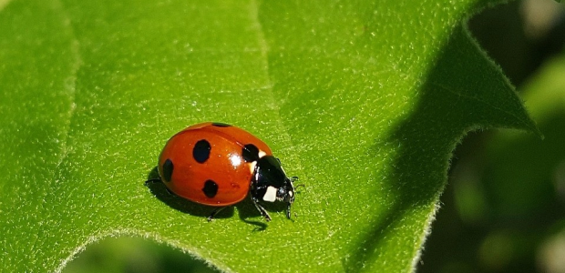

NO.023딱정벌레류
칠성무당벌레

발견 기록
27.09.28동네 공원 화단맑음 21º
27.08.06학교 텃밭흐림 19º
27.08.03동네 공원 화단흐림 16º


NO.023딱정벌레류
칠성무당벌레

나뭇잎 위를 천천히 기어가던 칠성무당벌레의
빨간 등에 검은 점이 또렷하게 보였어요.
가까이 다가가자 날개를 펴고 날아갔어요.
 PICO가 알려줘요 !
PICO가 알려줘요 !
칠성무당벌레는 빨간 날개에 일곱 개의 검은 점이 있는
곤충이에요. 주로 식물 주변에서 볼 수 있고,
위험을 느끼면 다리에서 노란색 액체를 내기도 해요.